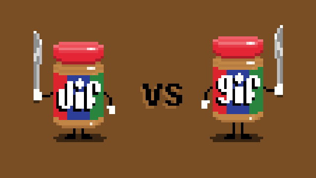

What should the pronunciation of GIF be?
A semi-satirical website analyzing the argument over the pronunciation of GIF.
By Rohan BharadwajAbout the debate
Since its creation, the pronunciation of GIF has been widely debated. With many questioning whether the popular file type should be pronounced with a hard or a soft g, the attention put into the debate greatly outweighs the importance of the debate.
Why this debate seems important
{kind=link}
The choice to analyze the debate over the pronunciation of GIF stems from the intrigue behind such a trivial debate. On the surface level, the debate looks trivial, unimportant and ultimate foolish, but can be further analyzed to reflect the importance of a few minor details. This debate is ultimately a pronunciation debate, which means it affects the English language, which would in turn affect 20% of the Earth’s population. However, unlike other debates regarding pronunciation, this one includes a very fundamental inconsistency in the pronunciation of the letter “g”. The elementary rule about the letter “g” taught to both new English learners and children alike is that if a “g” is followed by an “i”, “e” or “y”, it is pronounced like a “j”, or a soft “g” like in the word “gem”. Otherwise, it is pronounced with a hard “g” like in the word “game”. However, many inconsistencies arise that are often overlooked. For instance, the word “gel” is pronounced with a soft “g”, but “bagel” is pronounced with a hard “g”. And while we overlook exceptions like “bagel”, the simplicity of the word “GIF” allows for a more polarizing debate. Hence solving this debate may help clear more complex inconsistencies in the English language.

Why this debate is actually important
Possible effects of the solution to this question could be a paradigm shift in the English language. The English language is not regulated by a centralized institution, and rather relies on a few institutions who create dictionaries to define words and their pronunciations. By definitively answering this question, the introduction of an English language regulatory body may be imminent to help solve other polarizing inconsistencies in the language. Doing so can aid in the structured learning of the English language such as with new English learners and even artificial intelligence.
"gif"
While the English language has pronunciation rules for the letter “g” when followed by an “e”,”i”, or “y”, proponents of the hard “g” pronunciation of GIF would say there are exceptions in the English language like “girl” or “give”. While this rationale seems rather vacuous, there are a few explanations behind why GIF should be pronounced with a hard “g”.
{kind=link}
Pronunciation rules
GIF is an acronym standing for Graphics Interchange Format. Supporters of the hard “g” pronunciation claim that since acronyms are not necessarily words, they need not follow typical English pronunciation rules. This idea helps rationalize their decision to pronounce GIF with a hard “g”. Because the “G” in GIF stands for Graphics, which is pronounced with a hard “g”, it pushes for the case of the pronunciation with a hard “g”. “GIF” is also the most lexically similar to the word “gift” which is too pronounced with a hard “g”, where other words that are usually pronounced with a “jif” like “Jiffy Lube” and “back in a jiffy” are not spelled with a “g”.{kind=link}
Effects of defining GIF with a hard "g"
Many times in a simplistic debate as such, people look at concrete facts and don’t extrapolate the consequences of choosing one side over another with respect to society. Pronouncing GIF with a hard “g” could in fact prove beneficial in the development of artificial intelligence and with new English learners. Natural language processing (NLP) systems, or systems that attempt to process human speech and text into data a computer can understand, learn the pronunciation of new words by finding lexically similar words and “standardizing” the pronunciation. For instance if an NLP system was introduced to the word “meme”, it could know to pronounce the first “e” like in the word “team” and make the second “e” silent due to its lexical similarity to the name “Pete”. A word that is lexically similar to the word “GIF” is “gift” which is pronounced with a hard “g”. Based on this fact, if an NLP system was introduced to the word GIF, it would inherently pronounce it with a hard “g”. With the rapid rise in the creation of artificial intelligence, pronouncing GIF with a hard “g” may help clear any inconsistencies with a computer, which cannot handle exceptions as organically as humans."jif"
The case for the soft “g” pronunciation of GIF seems to be more clear cut but also rather close minded. The main argument for this position is that GIF is used like a normal word in English vernacular and should therefore follow the conventional rule that a “g” followed by an “e”, “i” or “y” should be pronounced as a soft “g”. While many may point out exceptions in the English language where this is not the case, proponents of the soft “g” pronunciation use interesting appeals to rationalize their decision.
{kind=link}
Effects of defining GIF with a soft "g"
In an attempt to solve the debate over the pronunciation of GIF, surveys were created to attempt to answer the age-old question by utilizing public opinion. While these surveys showed a preference towards the hard “g” pronunciation, looking at the data from a different perspective might suggest otherwise. While more developed countries preferred the hard “g” pronunciation, a lot of emerging economies in places like Asia and the Middle East actually preferred the soft “g” pronunciation. Since languages like “Spanish and Finnish lack the soft “g” in native words, for example, and most dialects of Arabic lack the hard one”, these distinctions make sense (The Data Team). It would appear that proponents of the soft “g” pronunciation of GIF are trying to account for more globalization and the possibility of English becoming the unofficial universal language of the world. Pushing for GIF to be pronounced with a soft “g” may demonstrate the understanding that due to native language differences, it will be easier for new English learners to pick up on pronunciation and not feel discriminated against simply because they don’t know how to pronounce a hard “g”.{kind=link}
Paying homage
Steve Wilhite, the creator of the GIF, is a proponent of the soft “g” pronunciation. The Economist’s Data Team, the same individuals who analyzed the survey results regarding the pronunciation of GIF agree with him. In their polarizing article, they state “Just because a belief is popular does not make it right”, subsequently referencing Galileo and his unorthodox heliocentric idea during his time. This may suggest that proponents of the soft “g” pronunciation of GIF are attempting to pay homage to its creator, and dismiss the idea that language should be decentralized. Since Wilhite was the creator, it seems rational to say he has the final say in how his idea should be pronounced. By giving credence to him, it is possible to conclude the debate once and for all as he knows the GIF better than the rest of society.GIF doesn't need to be properly defined
The debate over the pronunciation of GIF is often viewed as too simple, making it a very polarizing argument. However, like several disputed theories, many choose to believe a clear cut answer does not in fact matter, but that by answering the question, there may be more harm than good.
{kind=link}
Importance of language
Language is a social construct, in the sense that it “is mankind's greatest invention [but] was actually never invented.” By defining the pronunciation of a world in a clear cut way, the paradox of language as a social construct no longer exists. This could in turn create a regulatory agency for the English language contrary to the decentralized set of seemingly credible dictionaries English speakers use to define language. According to Walt Whitman, “language is the sum total of all that humans experience as a species.” An English regulatory agency parallels the Ministry of Truth in the fictional society of Oceania from 1984 by George Orwell. While Oceania intended to create a fair society, the Inner Party of Oceania set agendas for the different ministries. While it is improbable that our society will become like Oceania, the underlying message of Orwell’s satire stands: the regulation of information can lead to inherent biases.
Culture of dialects
Defining a clear cut pronunciation for GIF would also affect dialects. Dialects create differences in pronunciation based on cultural identities, and by setting a certain pronunciation, dialects may no longer exist. Noticing nuances in pronunciation can help give insights into a person’s background and can add another dimension to a person’s character. While defining pronunciations may solve a problem of how “unintelligent” dialects are perceived, it may also strip away the identity of a person, which seems to be one of the motives behind taking a neutral stance on the debate.Readings
Brutt-Griffler, Janina. “Conceptual Questions in English as a World Language: Taking up an Issue.” World Englishes, vol. 17, no. 3, 1998, pp. 381–392., doi:10.1111/1467-971x.00111.
Brutt-Griffler in this paper discusses the idea of how languages spread from native speakers to non-native speakers and how there are some distinctions that separate them quite a bit. Brutt-Griffler goes on to discuss about how only native speakers, or the “Inner Circle” of the language is in charge of how it changes and that non-native speakers, or the “Outer Circle” must adapt accordingly. This relationship between native and non-native speakers can give great insight into how GIF is defined in terms of pronunciation and who seems to have a say in how it is pronounced. Based on this idea, pushing for one side over another can seem like an agenda over just a personal preference.
Carlson, Holly K., and McHenry, Monica A.. “Effect of Accent and Dialect on Employability.” Journal of Employment Counseling, vol. 43, no. 2, 2006, pp. 70–83., doi:10.1002/j.2161-1920.2006.tb00008.x.
In this paper, Carson and McHenry look into how accents affect the way that people are hired for jobs. The first explored the idea of a bidialectism, or the ability of a person to change their dialect unconsciously based on the social situation they are in. They go on to discuss their study and how they utilized different methods to try to figure out different influences in the English language and how these influences can be perceived to a random sample of people. Between the 3 dialectical influences studied, there was a definite difference in how each was perceived relative to each other. This is simply due to the native languages spoken by the different groups studied and what accents they innately have as a result of speaking their native language so much. This was also viewed in how likable and employable the person was based on how they spoke. This acts as an extension of the intelligibility idea of the argument, as employability is often used as a metric of success.
Damper, R.i., et al. “Evaluating the Pronunciation Component of Text-to-Speech Systems for English: a Performance Comparison of Different Approaches.” Computer Speech & Language, vol. 13, no. 2, 1999, pp. 155–176., doi:10.1006/csla.1998.0117.
In this paper, Damper discusses the importance of pronunciation in text-to-speech systems and how computers are able to distinguish words based on nuances in pronunciation. Damper discusses how computers actually learn new words when introduced to them, and how they extrapolate data about the word based on words similar to it. This can give some insight into how AI and NLP (natural language processing) systems may pronounce the word “GIF” when introduced to it. Because “GIF” is lexically closest to the word “gift”, these systems would pronounce it with a hard “g”. This way that text-to-speech systems learn may also be similar to how new English learners learn to speak the language, and can help solve the debate using possible effects of choosing one side over another.
Munro, Murray J., and Tracey M. Derwing. “Foreign Accent, Comprehensibility, and Intelligibility in the Speech of Second Language Learners.” Language Learning, vol. 49, 1999, pp. 285–310., doi:10.1111/0023-8333.49.s1.8.
Munro and Tracey in this paper discuss how for non-native speakers of a language, the lack of a native accent can affect the way their speech is perceived by native speakers. Native speakers often view a person with an accent as less intelligent and may discriminate against the person as a result. However, while looking more closely at the results, people with accents seemed to really only have problems with comprehension, and not actual speech. This would suggest that when spoken to, speakers with accents seemed less intelligent as it takes them longer to comprehend a sentiment in a foreign language. While this is not directly related to pronunciation, it can greatly affect how one is perceived by a native speaker, and having impeccable pronunciation may give the illusion that one is more adept at a language than previously thought.
Rosson, Mary Beth. “The Interaction of Pronunciation Rules and Lexical Representations in Reading Aloud.” Memory & Cognition, vol. 13, no. 1, 1985, pp. 90–99., doi:10.3758/bf03198448.
Rosson discusses in this paper how pronunciation rules and lexical representations of words affect how it is perceived verbally. The studies done by Rosson found that separately, both pronunciation rules and lexical representations did not give enough information about a word to pronounce it consistently verbally, but when put together, were able to produce definitive results. The paper goes on to discuss how pronunciation rules should apply to smaller parts of a word while the lexical representation can help define the pronunciation of a word as a whole, and if there lie inconsistencies there, use the lexical “neighbor” pronunciation. However, for a word as simple as “GIF” this can be considered more open-ended as the English pronunciation rules for “GIF” would suggest a soft “g” yet the lexical representation and the closest lexical neighbors of “GIF” would suggest a hard “g”.
More Information
This debate is especially important to the creator of this website. As a child, his obsession with pronunciations reigned and mispronunciations were not easy to get past by him. However, the simplicity of this debate made it very polarizing and a live long question for him, especially as someone who has dealt with the file type extensively.
Images on this site can be sourced by clicking on them.